Porównanie baseline'u ResNet-18 (zamrożone ciało) z różną głębokością fine-tuningu oraz z lżejszą architekturą MobileNetV2. Wszystkie modele trenowano na tym samym podziale danych i z tym samym ziarnem.
Oxford Flowers 102: 8 189 zdjęć w naturalnym kontekście. Etykiety pochodzą z oficjalnego imagelabels.mat (Oxford VGG), bo w wersji z Kaggle zdjęcia testowe ich nie mają.
Stratyfikowany 80/10/10, random_state=6102. Każda z 102 klas jest w każdej części.
Średnio 80, mediana 66, stosunek największej do najmniejszej 6,5:1. Dlatego raportujemy macro-F1.
Dłuższy 500–1 168 px. Cache przeskalowany do 256 px przyspiesza dekodowanie.
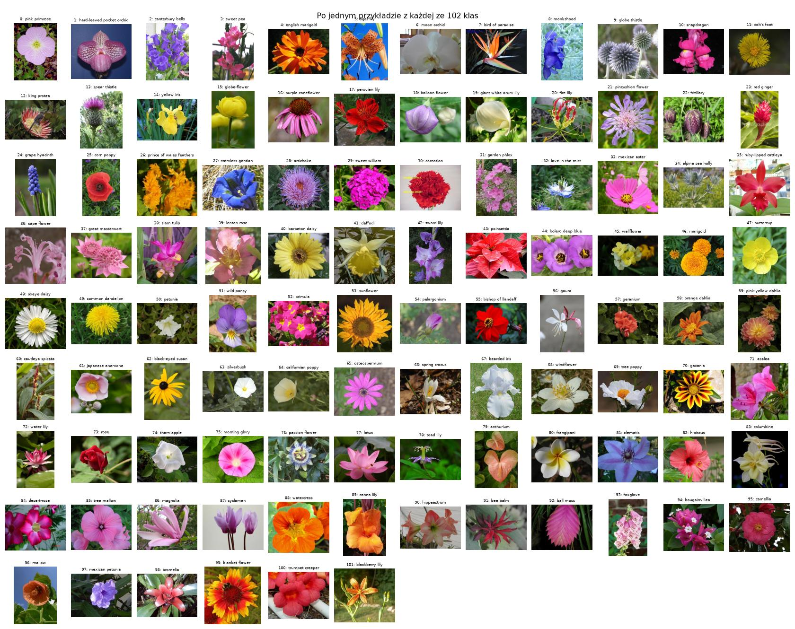
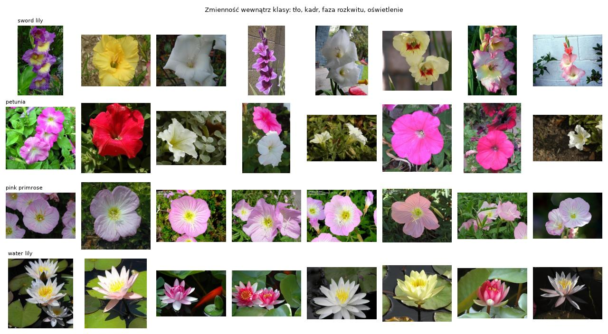
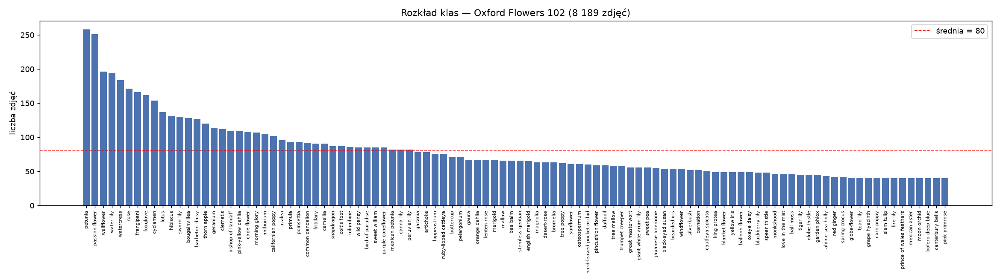
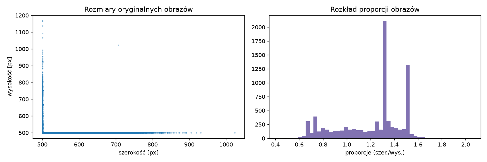
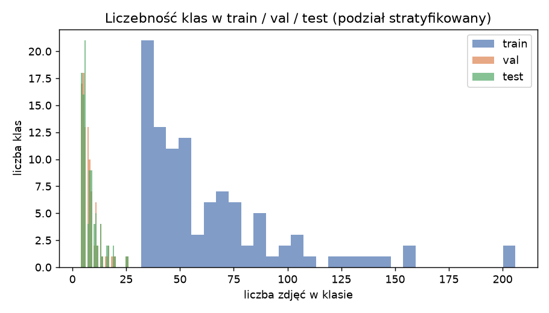
Wspólne ustawienia: wagi ImageNet (torchvision), wejście 224×224, batch 64, AdamW (wd 1e-4), OneCycle (10% rozgrzewki, spadek kosinusowy), label smoothing 0,1. Do testu wybierany jest checkpoint z najlepszą val accuracy. W zamrożonych częściach BatchNorm zostaje w trybie eval.
| wariant | co trenujemy | lr głowa / ciało | epoki |
|---|---|---|---|
| r18_frozen baseline | tylko nowa warstwa fc | 1e-3 / — | 10 |
| r18_last_block | layer4 + fc | 1e-3 / 3e-4 | 10 |
| r18_full | cała sieć | 1e-3 / 1e-4 | 12 |
| mnv2_frozen | tylko klasyfikator | 1e-3 / — | 10 |
| mnv2_full | cała sieć | 1e-3 / 1e-4 | 12 |
RandomResizedCrop(224, scale 0,6–1), odbicie poziome, ColorJitter(0,2). Walidacja i test: CenterCrop(224).
TopKCounter w src/metrics.py: top-k accuracy przez argsort logitów, bez gotowych funkcji metryk, z testem jednostkowym.
819 zdjęć, czyli ok. 8 na klasę. Różnica 0,1 pp to jedno zdjęcie. Kliknij nagłówek kolumny, żeby posortować tabelę.
Pionowa kreska = próg 0,84. Oś zaczyna się od 0,8, żeby widać było różnice.
| wariant | trenowane param. | czas treningu | latencja CPU | accuracy | macro-F1 | top-3 | top-5 |
|---|
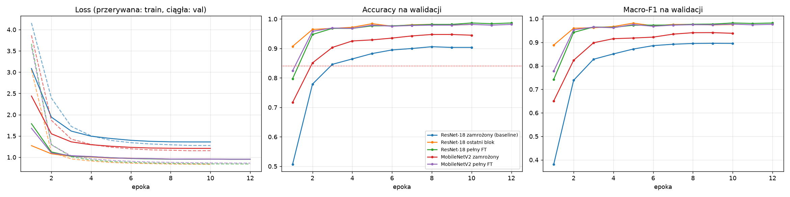
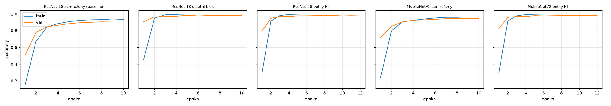
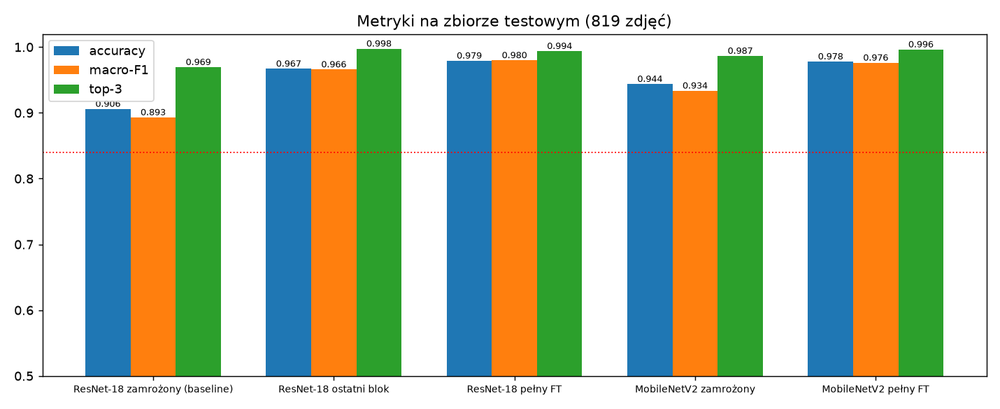
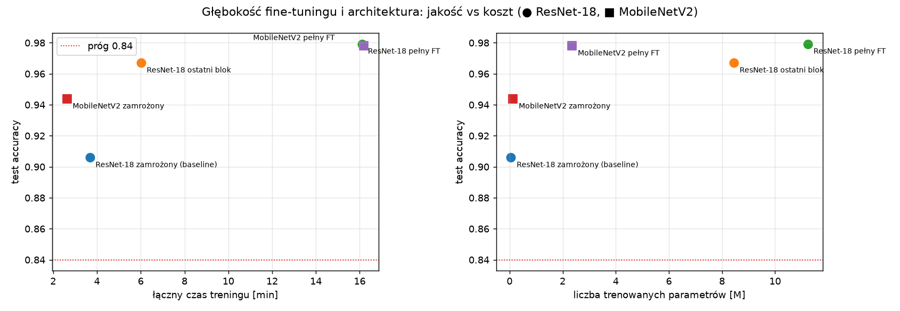
Zamrożone ciało vs ostatni blok vs cała sieć (ResNet-18). Czy opłaca się odmrażać więcej warstw?
Cechy ImageNet są ogólne („kwiat” a nie „sweet william”). Model się nie przeucza (train ≈ val), ogranicza go pojemność reprezentacji. 14 klas ma F1 < 0,8.
+6,1 pp przy ×1,6 czasu. layer4 koduje części obiektu i tekstury, które trzeba przestroić na detale kwiatów.
+1,2 pp przy ×2,7 czasu. Niższe warstwy już dobrze się przenoszą, więc zysk jest mały.
Najlepszy model myli się na 17 z 819 zdjęć. W 71% błędów prawdziwa klasa jest w top-3. Pewność softmax: 0,82 dla trafnych, 0,31 dla błędnych — model „wie, kiedy nie wie”.
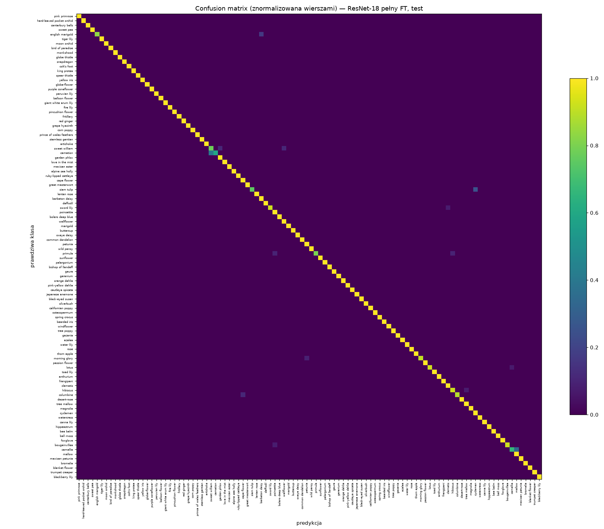
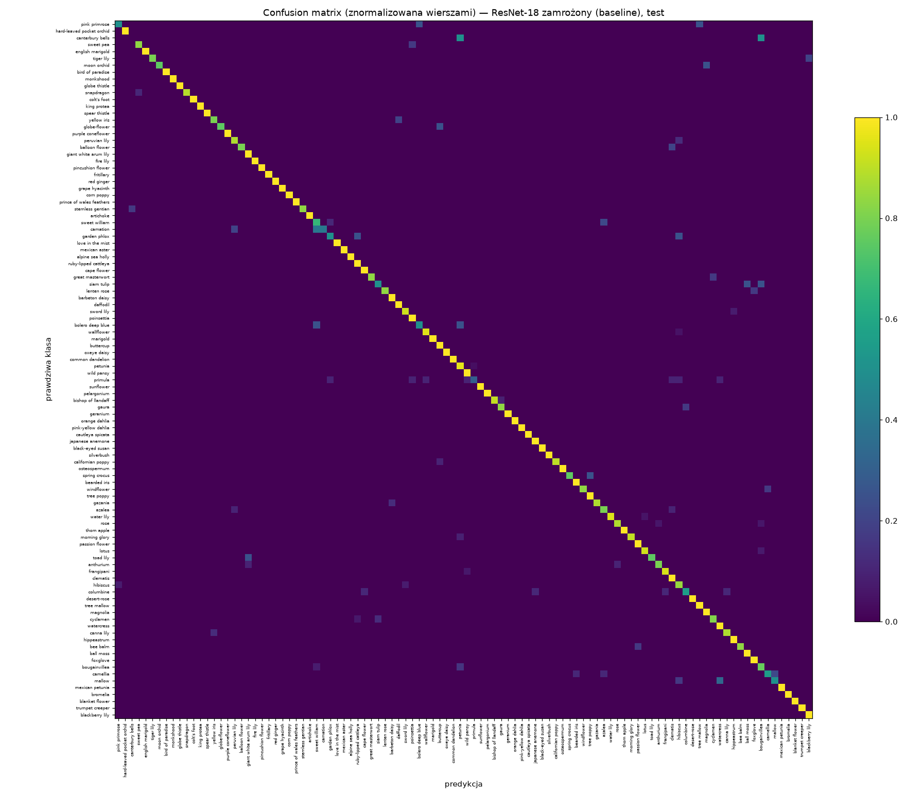
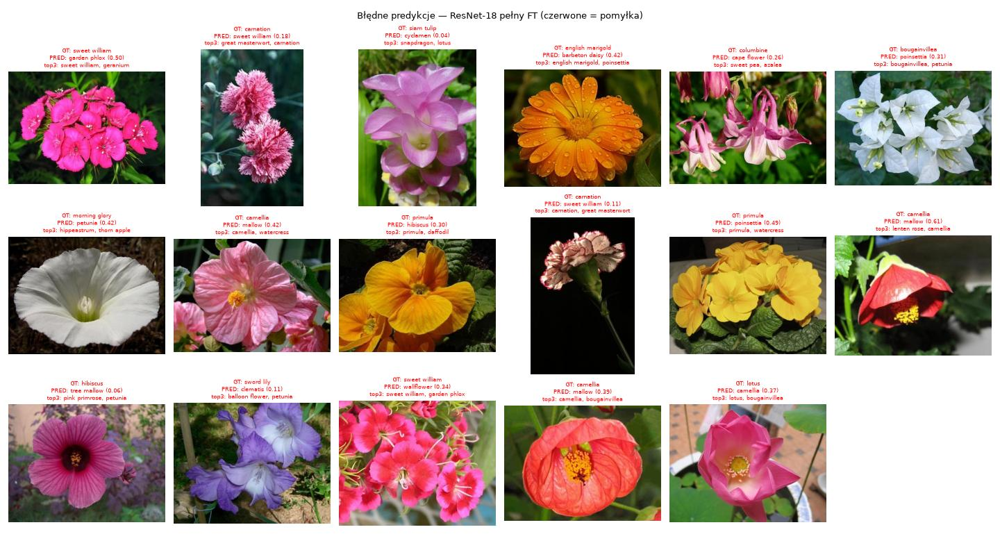
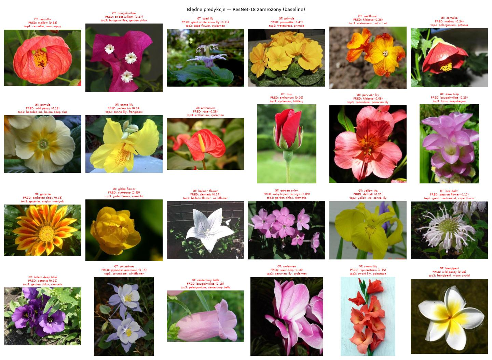
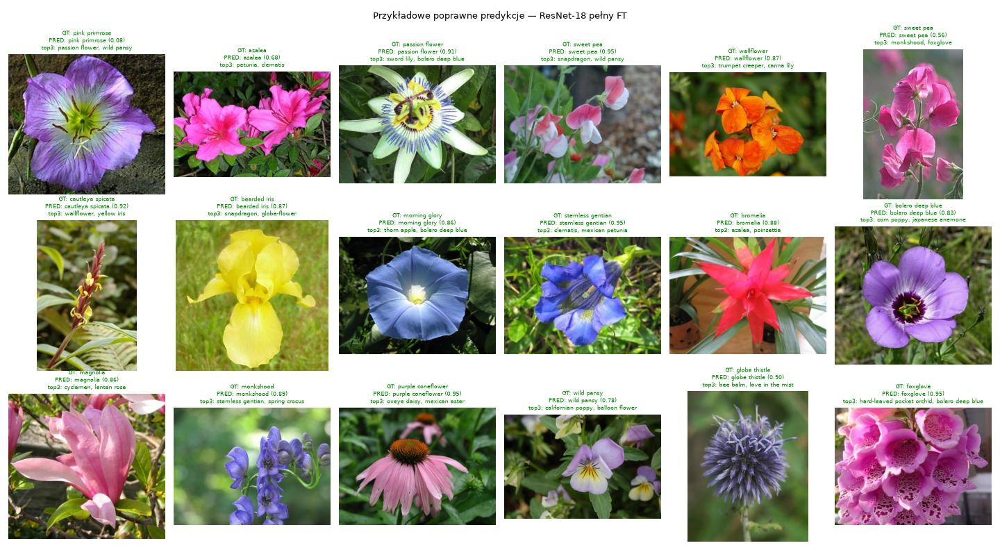
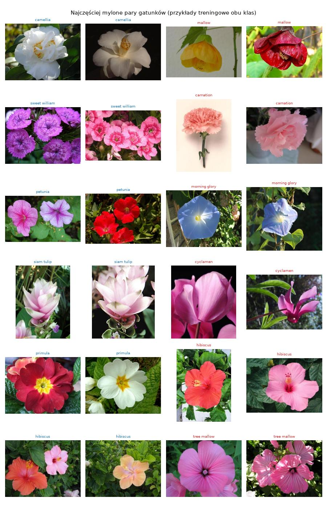
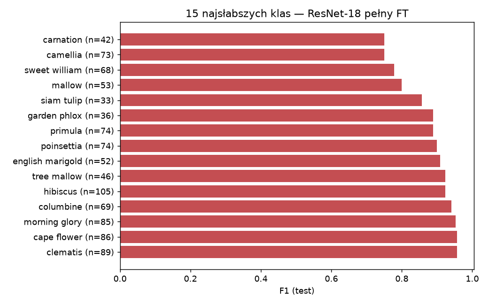
Korelacja Spearmana F1 klasy z liczbą zdjęć treningowych nigdzie nie jest dodatnia, a w najlepszym modelu jest istotnie ujemna (ρ = −0,31, p = 0,002). Najmniejsze klasy (~32 zdjęcia) są rozpoznawane bezbłędnie, bo są wizualnie unikatowe.
| wariant | ρ | p |
|---|---|---|
| ResNet-18 zamrożony | −0,03 | 0,76 |
| ResNet-18 ostatni blok | −0,11 | 0,27 |
| ResNet-18 pełny FT | −0,31 | 0,002 |
| MobileNetV2 zamrożony | +0,05 | 0,65 |
| MobileNetV2 pełny FT | −0,13 | 0,18 |
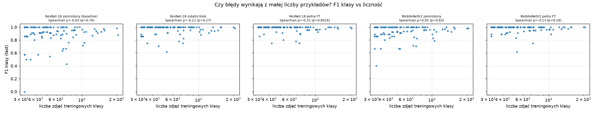
Gatunki blisko spokrewnione: sweet william i carnation to dwa gatunki goździka, hibiscus i tree mallow to ślazowate.
Duże klasy (petunia, hibiscus, primula) występują w wielu kolorach i kadrach, więc nachodzą na inne klasy.
Wszystkie 3 błędy camellia → mallow dotyczą zdjęć, które na oko przedstawiają abutilon (czyli „mallow”). Model prawdopodobnie ma rację (ocena z oględzin).
Kwiat z boku, fragment kwiatostanu, mocne zbliżenie — brakuje liści lub pokroju rośliny.
W aplikacji do rozpoznawania roślin warto pokazywać top-3 z prawdopodobieństwami (≈0,99–0,998), a przy pewności < ~0,4 prosić o drugie zdjęcie (liście, cała roślina). Na urządzenie mobilne: MobileNetV2 (pełny FT) przez CoreML/TFLite. Na serwer: ResNet-18 z odmrożonym ostatnim blokiem.
Testowano na Apple M4 (MPS). Urządzenie wybierane automatycznie: CUDA > MPS > CPU. Trening wszystkich wariantów: ~45 min na M4.
python3 -m venv .venv && source .venv/bin/activate pip install -r requirements.txt
cd src python data.py
python analyze_data.py
WANDB_MODE=offline PYTHON=python ./run_all.sh python train.py --run r18_full # pojedynczo python metrics.py # test licznika top-k
wandb sync wandb/offline-run-*Projekt: oxford-flowers102-finetuning. Link do dashboardu jest jeszcze do uzupełnienia w README.
jupyter notebook ../notebooks/demo.ipynb cd .. && python test/poc.py && python -m pytest test -q
src/config.py | seed, ścieżki, hiperparametry |
src/data.py | pobranie danych, podział, Dataset, augmentacja |
src/models.py | build_model(arch, finetune): frozen / last_block / full |
src/metrics.py | własny TopKCounter, macro-F1, confusion matrix |
src/train.py | pętla treningowa, W&B, wybór najlepszej epoki |
src/evaluate.py | tabele, wykresy, analiza błędów |
notebooks/demo.ipynb | demo top-3 i własne zdjęcie |
figures/ results/ splits/ | wykresy, metryki, plik podziału |